Software Projects
This is a selection of projects that I've created or been involved in.
Sightglass GitLab
Sightglass is a webapp for exploring media views for Wikimedia Commons media. Enter a Wikimedia Commons category and get view counts for the files in it, drawn from Wikimedia's Mediacounts data. Queries run on the server, so results are saved and shareable.
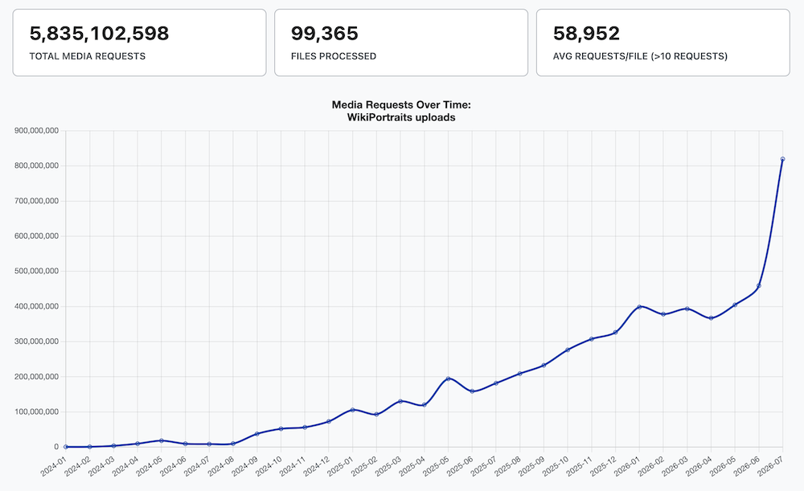
WikiPortraits Photo Service
The WikiPortraits Photo Service is a dedicated photo distribution platform for the WikiPortraits project, with over 100,000 photos from film festivals, sports, music, and more. The platform catalogs the photos from Wikimedia Commons and provides filtering by event, subject, photographer, and more.
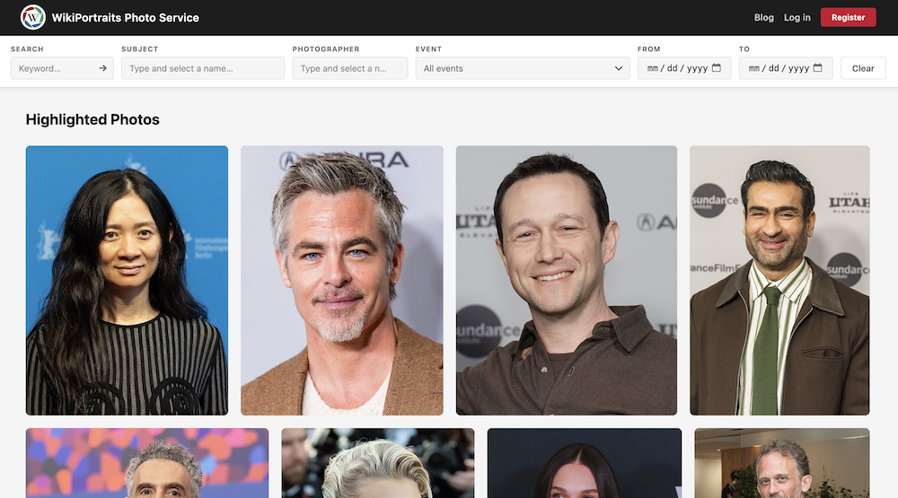
Commons Gallery
Commons Gallery is a web application that allows users to create and explore portfolios of freely licensed media from Wikimedia Commons in a sleek, dedicated, and modern interface. With MediaWiki being a text-first interface, the goal of this project is to provide a dedicated platform for Wikimedia Commons users to create rich portfolios.
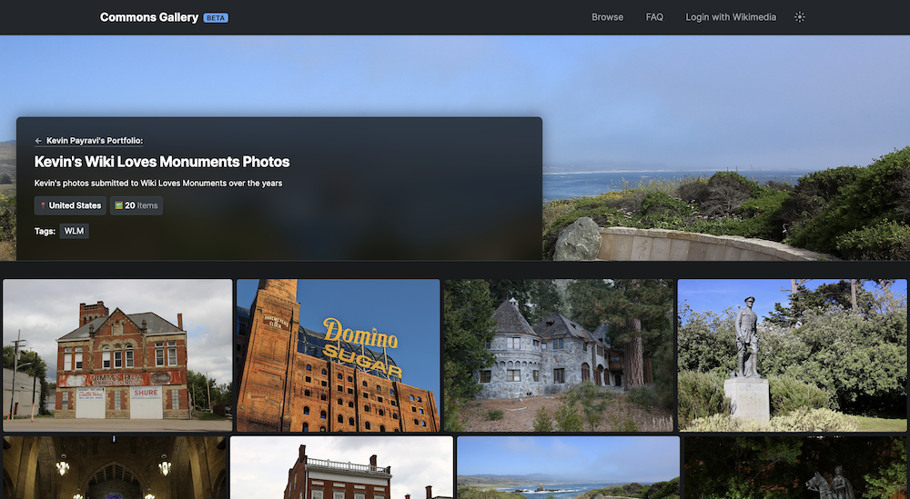
Cite Unseen GitHub
A JavaScript widget that embeds icons on Wikipedia citations to indicate the nature and reliability of sources. It catalogs over 20,000 domains and is used by hundreds of Wikipedia editors across several language versions of Wikipedia.
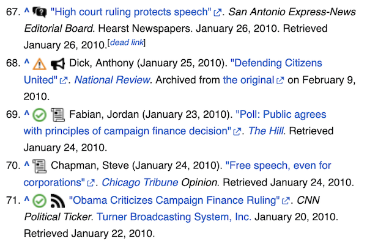
View it!
View it! is a project in active development that helps surface freely licensed images from the Wikimedia Commons to readers and editors of other Wikimedia projects. The tool uses Wikimedia Commons's relatively new structured data labelling to query media relevant to the respective subject.
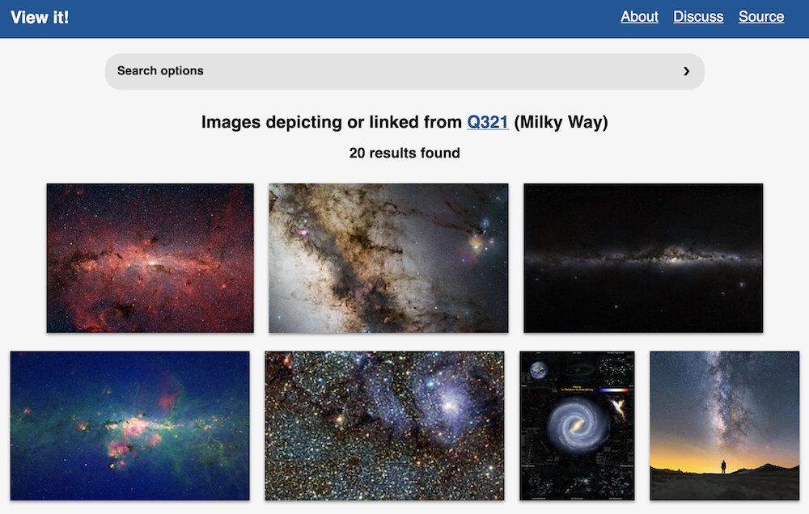
WikiAsteroids GitHub Blog Post
WikiAsteroids is a browser game that takes the classic arcade space shooter concept and adds a Wikipedia twist: each time someone makes an edit on Wikipedia, a new asteroid spawns. The size of the asteroid corresponds to the size of the edit. A new article creation spawns an extra life, and new user registrations spawn one of several possible power-ups.
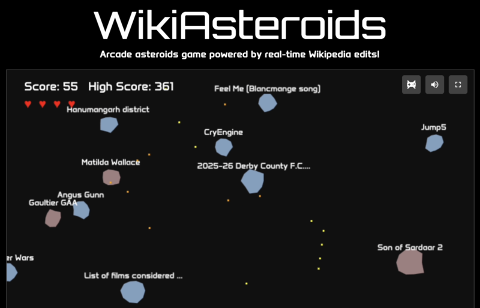
Wiki Arcade GitHub
The Wiki Arcade is an online directory of wiki-games, powered or inspired by Wikipedia and other Wikimedia projects. The games are presented in either a grid, scroll, or fun arcade cabinet view (coins required!).
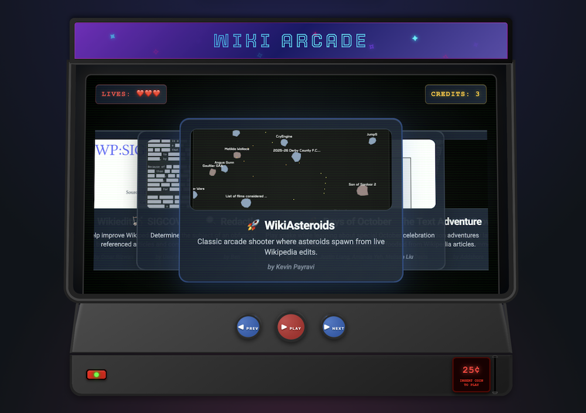
Indie Wiki Buddy
Indie Wiki Buddy is a browser extension that helps users easily discover and support independent wikis they might otherwise miss in search results. When visiting a wiki on a large, corporate-run site, this extension will notify or automatically redirect users to quality independent wikis when they're available. Search results in Google, Bing, and DuckDuckGo can also be filtered, replacing non-independent wikis with text inviting users to visit the independent counterpart.
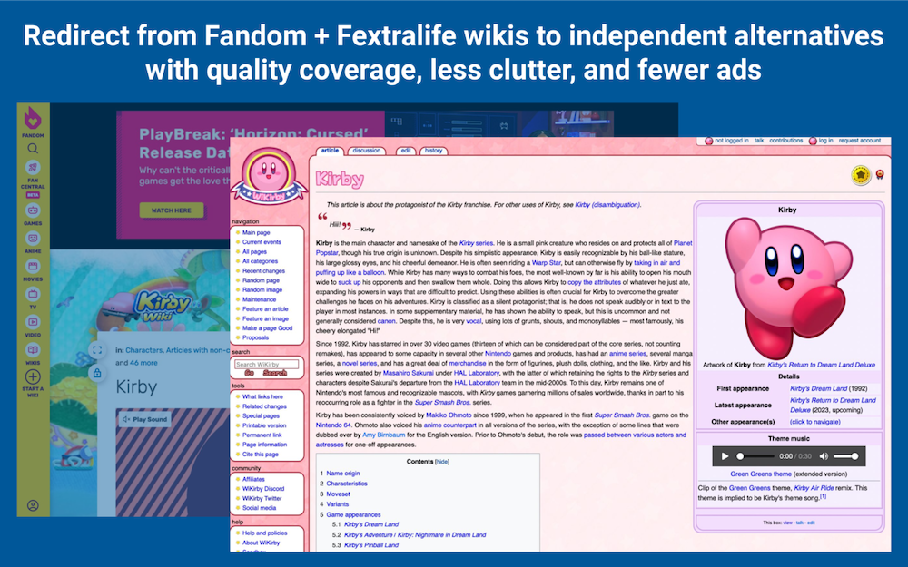
WikiPortraits Tools GitHub
As part of my work on WikiPortraits, I explore ways to make our photographers' experience easier on Wikimedia Commons. The WikiPortraits Tool site includes helpful utilities such as a more guided onboarding wizard that better prepares our photographers to contribute.
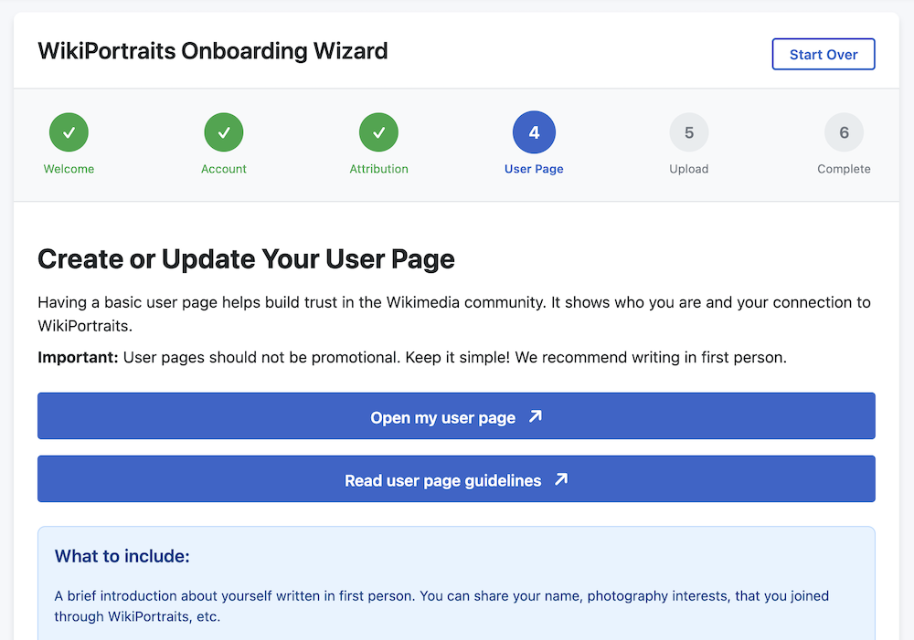
Nookipedia API GitHub
An open-source API that queries and returns structured data from Nookipedia, an Animal Crossing wiki. The API is used by hundreds of users and has been used to build Discord bots, game guide websites, and school projects.
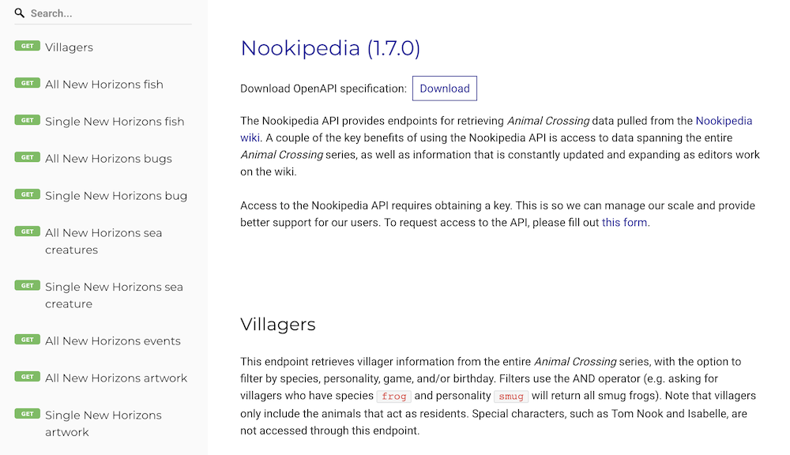
ACNH.Directory GitHub
A filterable directory of websites and tools dedicated to Animal Crossing: New Horizons. This site serves as the largest one-stop site to discover resources for the game. The website is open source, allowing anyone to submit additional resources.
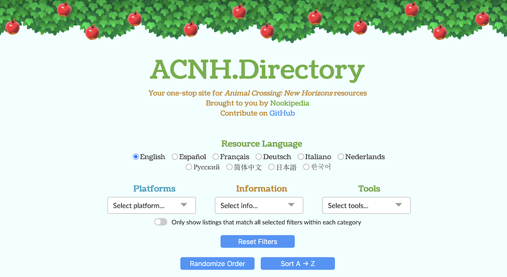
HackOHI/O 2016 Website GitHub
HackOHI/O 2016 is Ohio State's largest hackathon, built from the ground up as a landing page and showcase for the event. The branding focus for the year was an emphasis on triangles. The Trianglify JS library is used to create a unique header each time, along with triangles making an appearance throughout the rest of HackOHI/O's 2016 branded content.
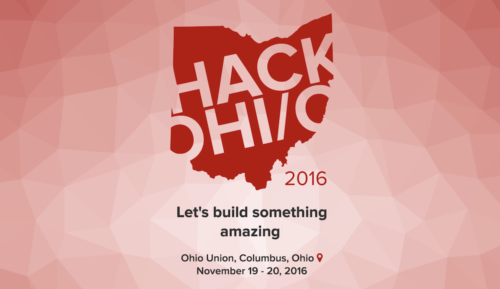
Hackalist GitHub
Hackalist is a now-archived global directory of upcoming hackathons, primarily geared towards college students. The site lists hackathons by month, and lets users limit hackathons to those that allow college students, provide travel reimbursements, and/or have prizes. The site is entirely hosted on GitHub with a public JSON API that anyone can contribute to or build their own tools off of.
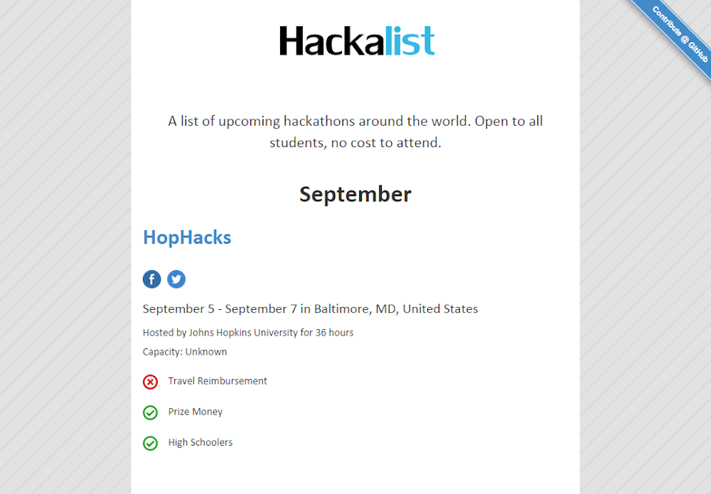